Installing the BV-BRC Command Line Interface¶
The BV-BRC project supports the BV-BRC command line on the following systems:
Apple computers running macOS version 10.11 (El Capitan) or newer.
PCs running Ubuntu Linux version 14 or newer.
PCs running Debian Linux or other Linux distributions derived from Debian (e.g. Mint).
PCs running Windows 7 or newer.
Windows 10 with Windows Subsystem for Linux and the Ubuntu distribution therein.
Distribution packages for the releases may be found at the BV-BRC github release site.
The installation details differ between the major operating systems. We will discuss each in turn.
Installation on macOS¶
The macOS version of the BV-BRC command line interface is distributed as a disk image file. We recommend downloading the most recent version listed at the BV-BRC github release site.
Download the release disk image file by clicking on the link named BV-BRC-<version>.dmg. Your browser will begin the download and save the file to your downloads directory.
If you are using Safari, the download may be found by clicking on the download status icon near the top right of window, or by going to the View menu and clicking “Show Downloads.
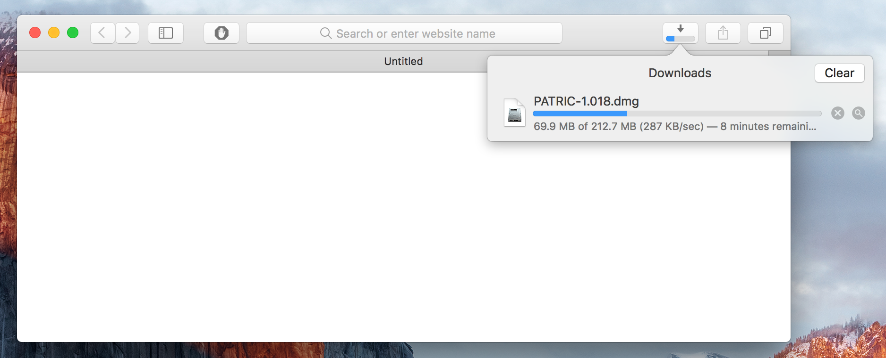
If you are using Google Chrome, the downloaded file will appear in an icon at the bottom of the Chrome window:
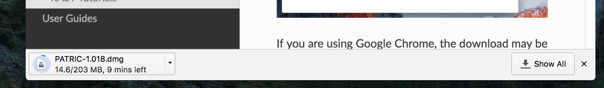
If you are using Firefox, you will first be prompted to download the binary file:
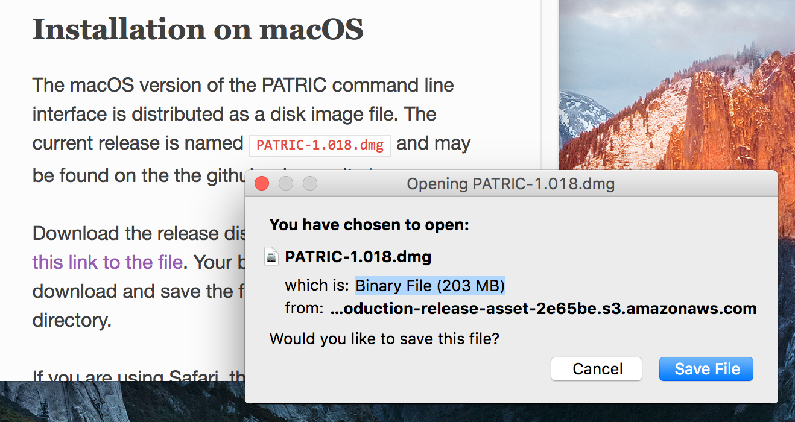
Select “Save File”. The file download status will appear in the top right of the window; click on the download icon to view the status and to open the downloaded document:
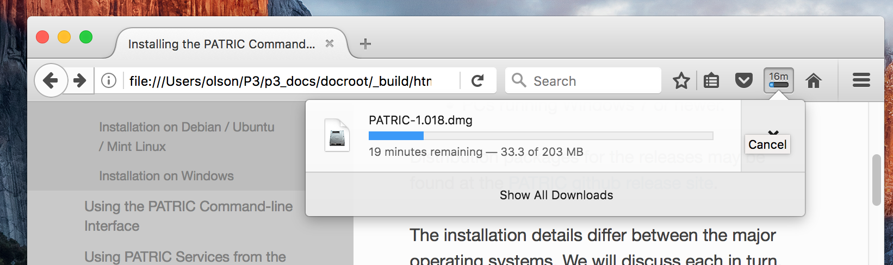
When the download is complete (depending on your internet speed it may
take several minutes since the disk image is 200 megabytes
in size), open the image by clicking on the downloaded file
BV-BRC-1.040.dmg.
The disk image will open and the following window will appear:
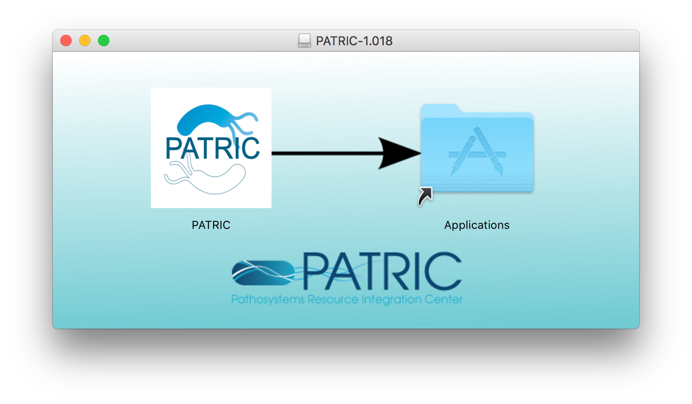
To install the distribution, drag the BV-BRC icon onto the Applications icon. This will copy the BV-BRC distribution into the Applications folder on your computer.
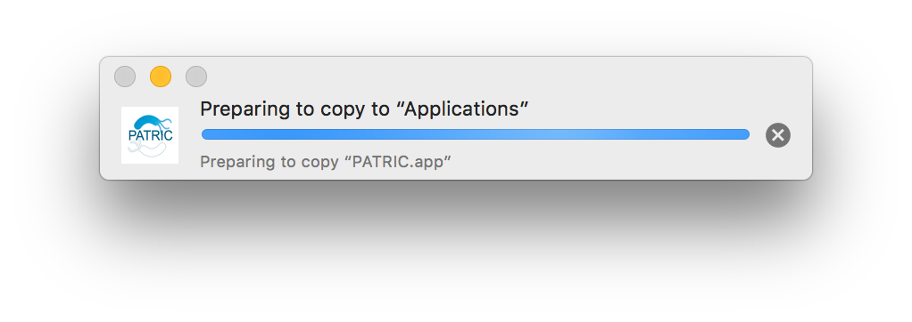
If you already an installation of the BV-BRC toolkit on your computer you will see the following dialog:
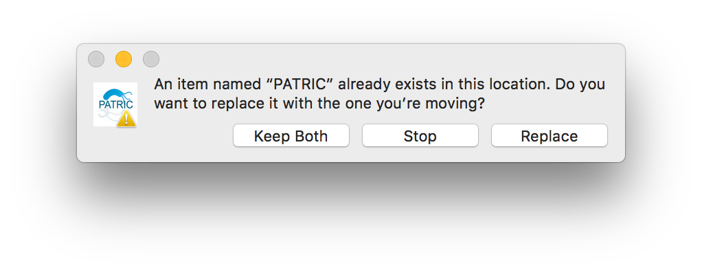
Select “Replace” to replace your existing installation with the new one.
Bring up a Finder window showing the Applications folder. You can do this by clicking the desktop background to bring Finder to the front, and selecting the Go menu and choosing Applications.
To start BV-BRC the first time, you will need to start it in a way that is a little clumsy. This is due to the security mechanisms in macOS that protect users from unguarded downloads of applications from the Internet.
You will know you need to do this if you doubleclick the BV-BRC icon and see this dialog:
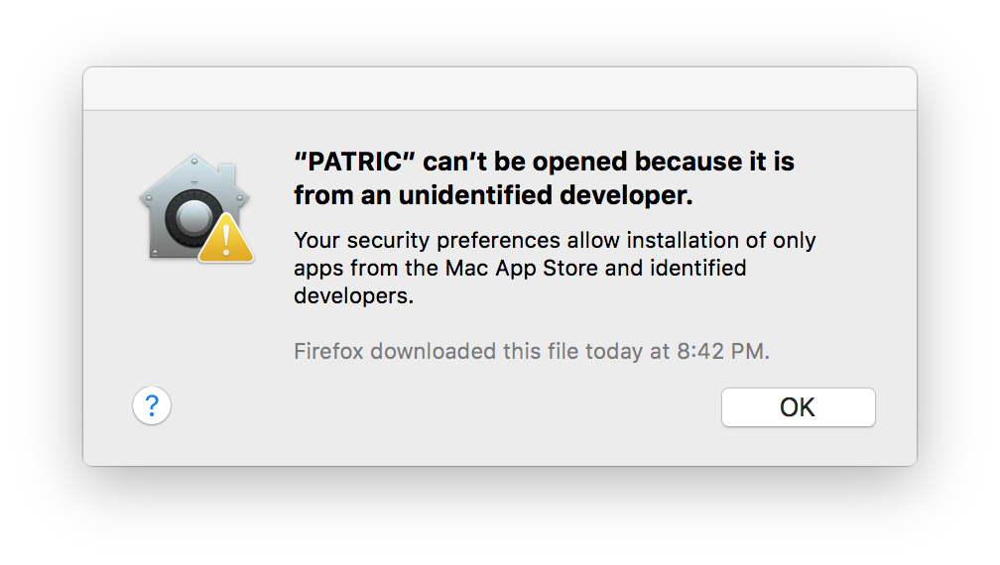
If you see this, instead of doubleclicking the BV-BRC icon, right-click it and select Open:
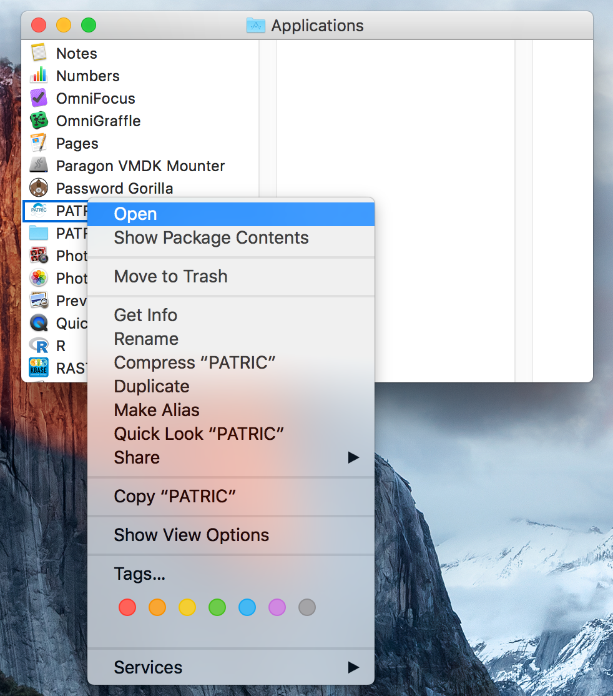
If your user account has administrative privileges you will be prompted to allow the application to open. Click “Open” to allow the application to proceed:
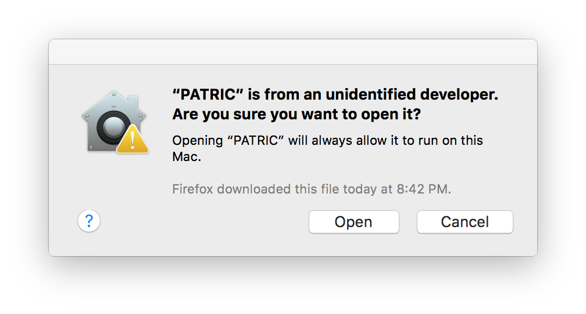
If your user account does not have administrative privileges, you will be prompted for an administrative account username and password:
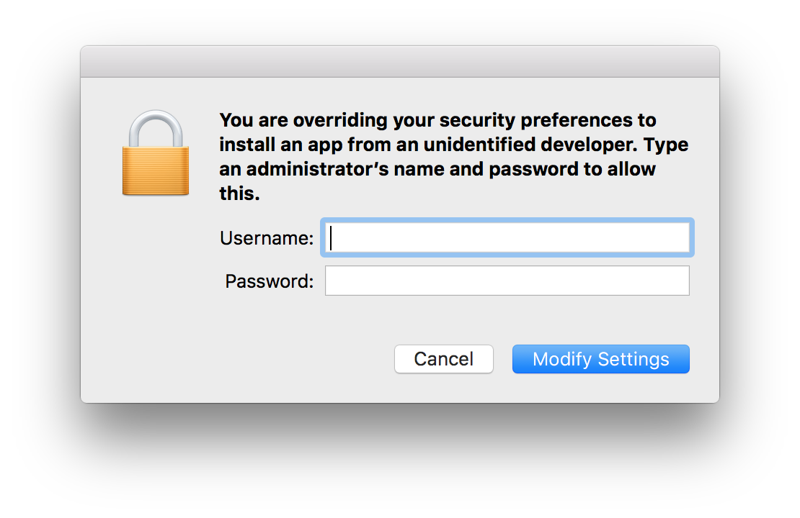
The BV-BRC icon will bounce in the dock, possibly for several seconds the first time, and then a Terminal window will open with the command line interface prompt:
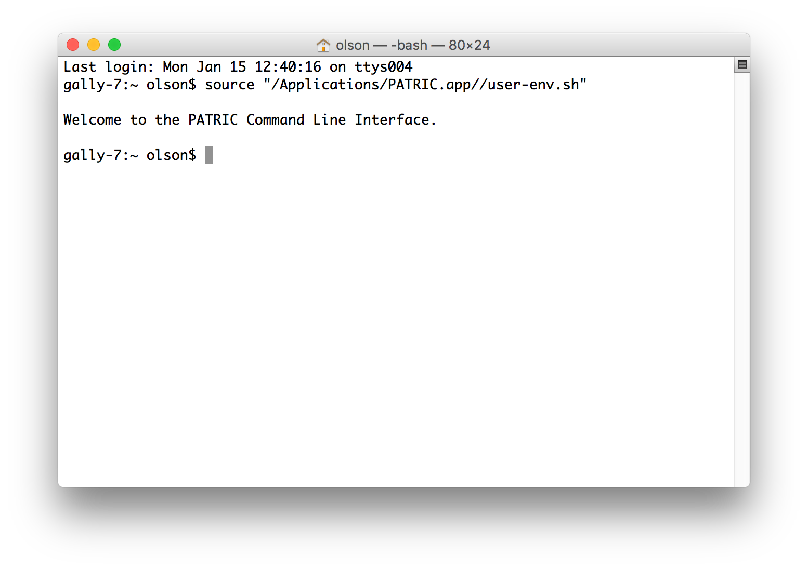
Installation on Debian / Ubuntu / Mint Linux¶
The version of the BV-BRC command line interface packaged for Debian
Linu and its derivative distributions (Ubuntu, Mint, etc) is provided
as a Debian .deb distribution file. The release is named
bvbrc-cli-<version>.deb and may be found on the
BV-BRC github release site.
There are several options for installation. The simplest is to
download the installer using a command line tool, and install with
dpkg. This method requires a followup call to apt-get to
resolve dependencies (here, we are installing version 1.024):
curl -O -L https://github.com/BV-BRC/BV-BRC-CLI/releases/download/1.040/bvbrc-cli-1.040.deb
sudo dpkg -i bvbrc-cli-1.040.deb
sudo sudo apt-get -f install
It may be simpler to install using the gdebi tool as it handles
dependency management itself. Ubuntu does not have gdebi installed
by default so you will need to install it first:
sudo apt-get install gdebi-core
Then to install with gdebi:
sudo gdebi bvbrc-cli-1.040.deb
When the install has completed, the BV-BRC command line tools will be
available for you to use. They are installed in the system binary
directory /usr/bin which is accessible in your default
environment.
If you see an error like the following:
$ sudo gdebi bvbrc--cli-1.040.deb
Reading package lists... Done
Building dependency tree
Reading state information... Done
Reading state information... Done
This package is uninstallable
Dependency is not satisfiable: libanyevent-perl
there are a couple possibilities. First, on Ubuntu the BV-BRC package requires the Universe repository to be enabled. This can be done in the user interface. Open software center. Click on ‘edit’ and then ‘software sources’ to open the software sources window. Once that is open, check the box that says, “Community-maintained free and open-source software (universe).”
This can also be done with the command line:
sudo add-apt-repository universe
If the Universe repository was already in place, your package cache may be out of date. This may be updated using:
sudo apt-get update
Installation on Windows¶
The Windows version of the BV-BRC command line interface is distributed
as a Windows installation package. The release is named
bv-brc-win64-<version>.exe and may be found on BV-BRC github release site.
Download the BV-BRC installer file by clicking on the link named bv-brc-win64-<version>.exe. Your
browser will begin the download and save the file to your downloads
directory.
Start the installer by doubleclicking the downloaded file. This will start the installation process. You should be able to take the defaults for all of the options.
When the installation has completed, you may start a BV-BRC command line window by going to the Start Menu, select All Programs, and then BV-BRC.